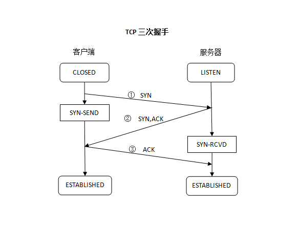
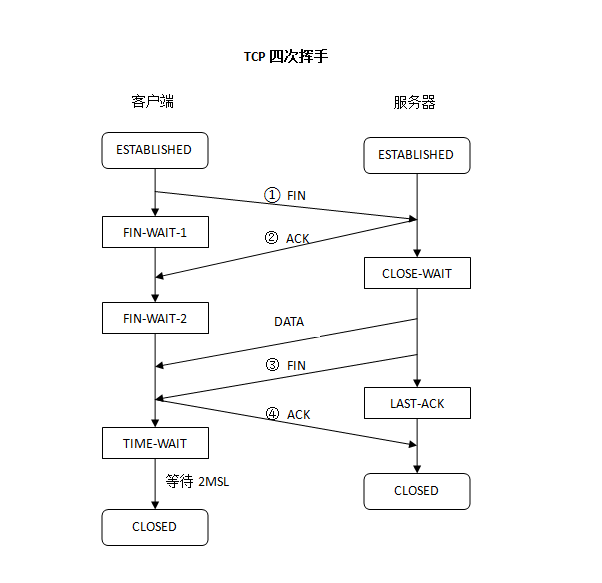
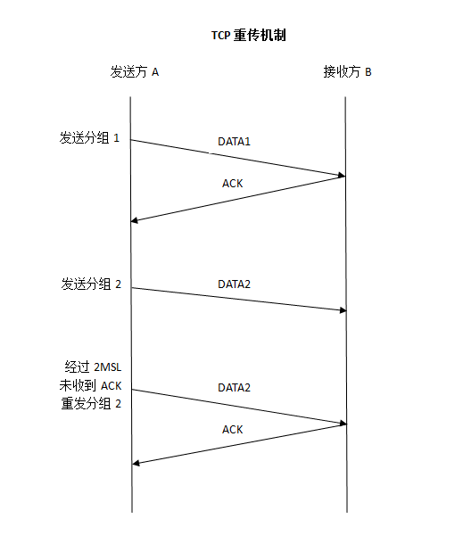

TCP 三次握手 四次挥手 重传机制总结
TCP三次握手

- 客户端发送SYN, 进入SYN-SEND状态.
- 服务器发送SYN,ACK, 进入SYN-RCVD状态.
- 客户端发送ACK, 进入ESTABLISHED状态.
- 服务器收到ACK, 进入ESTABLISHED状态.
TCP四次挥手

- 客户端发送FIN, 进入FIN-WAIT-1状态.
- 服务器发送ACK, 进入CLOSE-WAIT状态.
- 服务器发送最后一个数据DATA.
- 服务器发送FIN, 进入LAST-ACK状态.
- 客户端发送ACK, 进入TIME-WAITDTL.
- 服务器收到ACK, 进入CLOSED状态.
- 客户端等待2MSL, 进入CLOSED状态. 若2MSL内又收到FIN, 说明服务器未收到ACK, 报文重传, 则再次发送ACK.
TCP重传机制

- 网络正常时, A发送数据DATA1, B发送ACK.
- 网络拥堵时, A发送数据DATA2, B可能没收到, 也可能收到并发送ACK而A没收到ACK, 此时A经过2MSL(2倍最大报文段生存时间)后, 最终未收到ACK, 会将报文重传, 重发数据DATA2.
服务器timewait太多 修改配置
vi /etc/sysctl.conf
net.ipv4.tcp_syncookies = 1
net.ipv4.tcp_tw_reuse=1 # 让TIME_WAIT状态可以重用，这样即使TIME_WAIT占满了所有端口，也不会拒绝新的请求造成障碍 默认是0
net.ipv4.tcp_tw_recycle=1 # 让TIME_WAIT尽快回收 默认0
net.ipv4.tcp_fin_timeout=30
/sbin/sysctl -p # 让修改生效